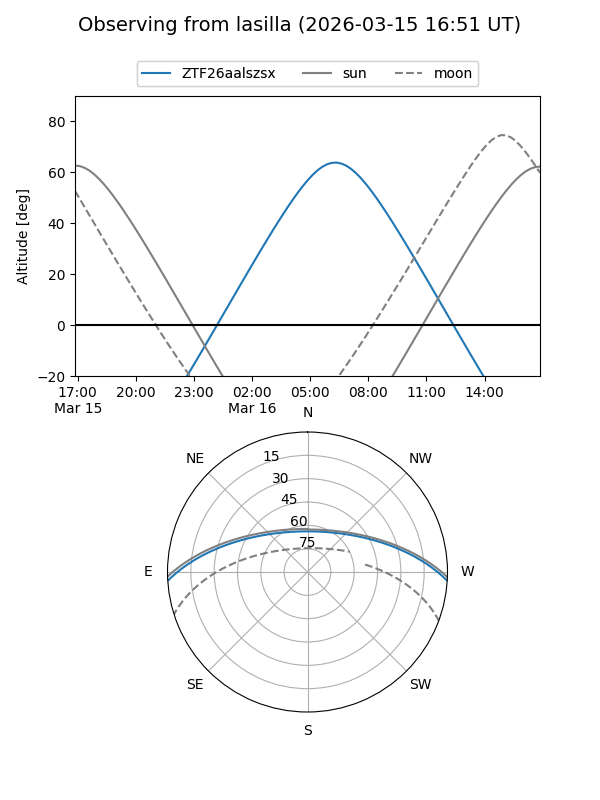
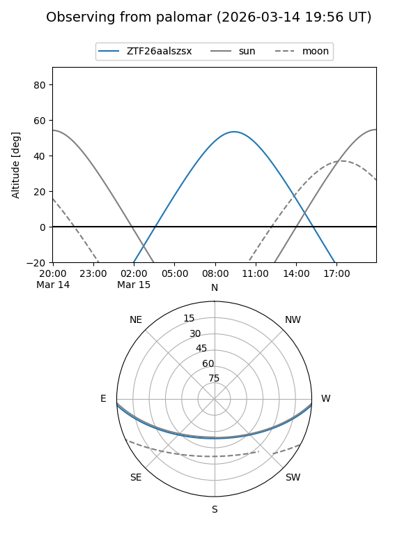

ZTF26aalszsx
Target ZTF26aalszsx at 2026-03-15 11:55
Aliases and brokers:
FINK: link
Lasair: link
ALeRCE: link
alt names
ZTF26aalszsx (ztf,fink_ztf)
Coordinates:
equatorial (ra, dec) = 197.1380,-2.97491
equatorial (HMS+DMS) = 13:08:33.12,-02:58:29.67
galactic (l, b) = (311.4023,+59.61508)
Flags:
Photometry:
last ztfg=19.85
1 ztfg detections
Lightcurve
Visibility


Additional plots